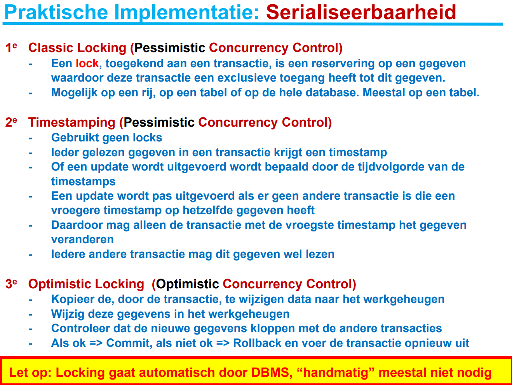
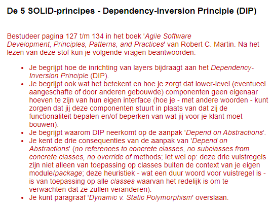

- ORM
- Add-Migration ... en Update-Database
- Data-annotaties: configureren data model en mapping
-
DBContext
- DbSet: wat moet er opgeslagen worden?
- OnConfiguring: connectiestring, (lazy) loading
- OnModelCreating: configureren data model en mapping met Fluent API
- Versie 5 ondersteunt many-to-many (release date)
- De static class DBInitializer (is geen singleton)
- ORM is geen pattern
- MVC is een pattern
- lazy load is een pattern
- We kunnen een webapplicatie maken met ASP.NET Core MVC [10b]
- We kunnen een database aanmaken code-first en gebruiken met de ORM EF Core [11b]
(en bevragen met LINQ [11a])
Hoe kunnen we EF Core gebruiken in ASP.NET Core MVC?
- Wanneer wordt de DBContext aangemaakt?
- Wanneer wordt de in een HTTP request meegegeven data gechecked voordat het de database in gaat?
- Richtlijn: maak een DBContext aan per unit of work
- Hoe vaak SaveChanges, hoe vaak DBContext.Dispose?
-
SaveChanges:
-
Wat doet SaveChanges?
-
SaveChanges maakt een transactie aan en voert het uit.
-
De constructor en de Dispose van de DBContext: maak connectie en ruim op.
-
DBContext is niet thread-safe.
EF Core implementeert optimistic concurrency control. Zie de MSDN

Transacties kan ook handmatig
Vraag: wanneer is optimistic concurrency control beter?
In ASP.NET Core gebeurt dat niet in de controller.
- Via dependency injection
- Dependency injection is een design pattern
Verschillende 'vormen': door constructor, property, method, etc.

- Dependency Inversion is een principe
- Dependency Injection is een design pattern om Dependency Inversion te bereiken.
public class AudiRS2
{
public void GeefGas() { /* ... */ }
}
public class Automobilist
{
private AudiRS2 auto;
public Automobilist()
{
auto = new AudiRS2();
}
public void Rijden()
{
// ...
auto.GeefGas();
// ...
}
}
public interface IAuto { void GeefGas(); }
public class AudiRS2 : IAuto
{
public void GeefGas() { /* ... */ }
}
public class Automobilist
{
private IAuto auto;
public Automobilist(IAuto auto)
{
this.auto = auto;
}
public void Rijden()
{
// ...
auto.GeefGas();
// ...
}
}
public interface IService { void DoIets(); }
public class ConcreteService : IService
{
public void DoIets() { /* ... */ }
}
public class Client
{
private IService service;
public Client(IService service)
{
this.service = service;
}
public void EenMethode()
{
// ...
service.DoIets();
// ...
}
}
- DIP kan ook met factory
- Kan ook object meegeven aan methode of property setten.
In ASP.NET Core gebeurt dat niet in de controller. Lees dit.
- Via dependency injection
- Dependency injection is een design pattern
- In Startup.cs:
public void ConfigureServices(IServiceCollection services)
{
services.AddControllers();
services.AddDbContext<MijnContext>(
options => options.UseSqlServer("..."));
}
En:
public class MijnContext : DbContext
{
public MijnContext(DbContextOptions<MijnContext> p)
: base(o)
{ }
}
En dan gebruiken we het als:
public class MijnController
{
private readonly MijnContext _context;
public MijnController(MijnContext context)
{
_context = context;
}
}
-
Deze dependency injection gaat op een ASP.NET Core-specifieke manier.
public interface IDateTime
{
DateTime Now
{
get;
}
}
public class SystemDateTime : IDateTime
{
public DateTime Now
{
get
{
return DateTime.Now;
}
}
}
public class Startup
{
// ...
public void ConfigureServices(IServiceCollection services)
{
services.AddSingleton<IDateTime, SystemDateTime>();
services.AddControllersWithViews();
}
}
public class HomeController : Controller
{
private readonly IDateTime _dateTime;
public HomeController(IDateTime dateTime)
{
_dateTime = dateTime;
}
public string Index()
{
return "De tijd is: " + _dateTime.Now.ToString();
}
}
Zie deze blog voor meer details.
Opties injecteren gaat met .Configure, zie de MSDN.
public class Movie
{
public int Id { get; set; }
[StringLength(60, MinimumLength = 3)]
[Required]
public string Title { get; set; }
[Display(Name = "Release Date")]
[DataType(DataType.Date)]
public DateTime ReleaseDate { get; set; }
[Range(1, 100)]
[DataType(DataType.Currency)]
[Column(TypeName = "decimal(18, 2)")]
public decimal Price { get; set; }
[RegularExpression(@"^[A-Z]+[a-zA-Z]*$")]
[Required]
[StringLength(30)]
public string Genre { get; set; }
[RegularExpression(@"^[A-Z]+[a-zA-Z0-9""'\s-]*$")]
[StringLength(5)]
[Required]
public string Rating { get; set; }
}
// GET: Movies/Create
public IActionResult Create()
{
return View();
}
// POST: Movies/Create
[HttpPost]
public void IActionResult Create(Movie movie)
{
if (ModelState.IsValid)
{
_context.Add(movie);
_context.SaveChanges();
return RedirectToAction("Index");
}
return View(movie);
}
- Een Unit is klein
- Meestal kiezen we als unit voor 1 methode van een specifieke Class
- We willen graag een Automatische test voorbereiden
- Dat is nuttig voor de bewaking van de kwaliteit van je code
- Na iedere (kleine) wijziging kun je de code automatisch testen
- Het voorkomt bugs in bestaande functionaliteit (omdat unittests moeten blijven slagen)
- Voor nieuwe functionaliteit moeten er natuurlijk wel nieuwe unittests worden aangemaakt
Gecategoriseerd op 'grootte':
- Unittest
- Integratietest
- Systeemtest
Gecategoriseerd op wat er getest wordt:
- Compatibility testen. Bijv.: verschillende browsers
- Performance testen / Load testen. Bijv.: voeg 10000 studenten toe en gebruik een timer.
- Usability/accessibility testen (gastcollege Stichting Accessibility!)
- Penetration testen (gastcollege Centric!)
- Code quality testen. Bijv. tool om statisch code te checken: Microsoft.CodeAnalysis.FxCopAnalyzers NuGet package
[zie de MSDN voor meer uitleg]
Herinner onze DbInitializer:
public static class DbInitializer
{
public static void Initialize(MijnContext context)
{
if (context.Studenten.Any()) return;
context.Studenten.Add(new Student { Naam = "Bob" });
context.Studenten.Add(new Student { Naam = "Alice" });
context.SaveChanges();
}
}
public static void Main(string[] args)
{
var host = CreateHostBuilder(args).Build();
using (var scope = host.Services.CreateScope())
{
DbInitializer.Initialize(scope.ServiceProvider
.GetRequiredService<MijnContext>());
}
host.Run();
}
In de configuratie van het model, OnModelCreating, kan ook worden geseed:
modelBuilder.Entity<Blog>().HasData(new Blog {BlogId = 1, Url = "http://sample.com"});
Dit is langzaam en Id's moeten worden geset.
- Wat kun je eigenlijk testen in een Controller?
- Je kunt alle Action-methods testen
- Voor elke Action-Method schrijf je minimaal 1 unittest
- Wat heb je nodig om de unittests voor te bereiden?
- Je maakt een nieuw ASP.NET Core-project aan (de default is goed genoeg)
- Daarna voeg je een testproject o.b.v. xUnit toe (zoals in 10a)
- Vergeet niet om in je testcode een Reference op te nemen naar de webapplicatie (we testen namelijk de webapplicatie)
Hier kunnen we de Privacy Action-method voor gebruiken (aangemaakt in de Home-Controller)
[Fact]
public void PrivacyInHomeController()
{
HomeController c = new HomeController();
var result = c.Privacy();
//result moet een view zijn
var viewResult = Assert.IsType<ViewResult>(result);
//checken op correcte ViewData
var message = viewResult.ViewData["Message"];
Assert.Equal("Uw privacy wordt gerespecteerd. ", message);
}
-
Om de Controller te kunnen gebruiken heb je een using-regel nodig in je unittest bestand
using Project.Controllers;
-
Nu krijg je echter een foutmelding van de compiler voor de regel
var result = c.Privacy();
-
Dit komt omdat de Privacy methode een IActionResult teruggeeft die hij niet kent
- Voeg daarom eerst package Microsoft.AspNetCore.MVC toe
-
Gebruik dezelfde versie als in je echte project en neem using op in je testfile:
using Microsoft.AspNetCore.Mvc;
- NB: Soms is het nodig om je project opnieuw te starten (als foutmeldingen niet verdwijnen)
- Soms zijn er problemen met het toevoegen van NuGet Package Microsoft.AspNetCore.Mvc
- In Project.csproj file worden alle referentie opgeslagen:
- Openen kan met rechtermuis op het project > "Edit Project.csproj"
- Visual Studio opent dan een XML file
- Deze file kun je ook rechtstreeks bewerken om de versie van een NuGet Package te wijzigen
- Vergeet niet om de file te bewaren en
- Om de Solution met Rebuild opnieuw te compileren
-
In de volgende 2 sheets staan correcte voorbeelden van Project.csproj-files
- soms gebeurt het dat je een Warning blijft zien maar de unittesten met xUnit werken nu wel
<Project Sdk="Microsoft.NET.Sdk.Web">
<PropertyGroup>
<TargetFramework>netcoreapp3.1</TargetFramework>
</PropertyGroup>
<ItemGroup>
<PackageReference Include="Microsoft.AspNetCore.App" />
</ItemGroup>
</Project>
<Project Sdk="Microsoft.NET.Sdk">
<PropertyGroup>
<TargetFramework>netcoreapp3.1</TargetFramework>
<IsPackable>false</IsPackable>
</PropertyGroup>
<ItemGroup>
<PackageReference Include="Microsoft.AspNetCore.Mvc" Version=“2.1.3" />
<PackageReference Include="Microsoft.NET.Test.Sdk" Version="15.8.0" />
<PackageReference Include="xunit" Version="2.3.1" />
<PackageReference Include="xunit.runner.visualstudio" Version="2.3.1" />
</ItemGroup>
<ItemGroup>
<ProjectReference Include="..\WebApplicationUnitTest2\WebApplicationUnitTest2.csproj" />
</ItemGroup>
</Project>
- We testen een Action-method (een unit!)
- We doen geen http-Request, maar roepen de methode rechtstreeks aan
- Je kunt voor alle parameters een waarde meegeven (normaal bij elke method)
-
Vervolgens test je het antwoord (dat van het type IActionResult is):
- Is het resultaat een view?
- Dat kan eventueel ook de view van een ‘404 Not Found’ zijn
- En je kunt ook testen of een RedirectToAction wordt uitgevoerd.
- Welke ViewData wordt doorgegeven aan de View?
- Welk Model wordt doorgegeven aan de View?
- Zijn deze correct op basis van de input?
- NB: De resulterende HTML wordt helemaal niet getest!!!
De meeste controllers geven ook een Model mee aan de View, bijvoorbeeld:
public IActionResult Index()
{
List<Student> studentenLijst = new List<Student>()
{
new Student() { Id = 1, Name = "Bert"},
new Student() { Id = 5, Name = "Ernie" }
};
return View(studentenLijst);
}
Hoe test je of in deze Unit het juiste model wordt meegegeven?
[Fact]
public void AllStudents_Index_StudentController()
{
StudentController c = new StudentController();
var result = c.Index();
//result moet een view zijn
var viewResult = Assert.IsType<ViewResult>(result);
//checken op correcte Model Data: is het de correcte class?
var model = Assert.IsAssignableFrom<List<Student>> (viewResult.ViewData.Model);
//bevat het de juiste data
Assert.Equal(2, model.Count);
Assert.Equal("Ernie", model[1].Name);
//enz.
}
-
Had je ook een View aangemaakt bij de Action-method Index in StudentController?
- Zo ja: Hernoem deze view
- Zo nee: Slaagde de unittest?
- Heb je de Action-Method ook aangeroepen in de browser?
-
En? Werkt deze? Nee, want de browser geeft een lelijke foutmelding:
- Dit is het beste bewijs dat je de View (die de HTML aanmaakt) echt niet test in je Unittest!
Stel: je hebt op een Home-button geklikt in StudentController
public IActionResult Home(Student s)
{
if (ModelState.IsValid)
// Hier wordt normaal data naar db geschreven. Daarna
// overstap van StudentController naar HomeController.
return RedirectToAction("Index", "Home");
else
return View(s);
}
Hoe controleer je nu of Routing correct gebeurt (in dit geval naar HomeController, Action Index)?
[Fact]
public void Valid_Redirect_To_HomeController()
{
StudentController c = new StudentController();
var result = c.Home(null);
var redirectToActionResult =
Assert.IsType<RedirectToActionResult>(result);
Assert.Equal("Home", redirectToActionResult.ControllerName);
Assert.Equal("Index", redirectToActionResult.ActionName);
}
Nu zonder database, straks met:
[HttpPost]
public IActionResult Edit(Student s)
{
if (ModelState.IsValid)
//hier hoort nog eigenlijk wegschrijven naar Db
return RedirectToAction("Index");
else
return View(s);
}
Check of RedirectToAction met valide student wordt uitgevoerd
[Fact]
public void Valid_Edit_StudentController()
{
StudentController c = new StudentController();
Student s = new Student() { Name = "Willem" };
var result = c.Edit(s);
var redirectToActionResult = Assert.IsType(result);
// Met Assert.Null (…) controleer je of de aanroep binnen dezelfde
// Controller wordt uitgevoerd.
Assert.Null(redirectToActionResult.ControllerName);
Assert.Equal("Index", redirectToActionResult.ActionName);
}
N.B.: [HttpPost] is voor het testen irrelevant.
Willem-Alexander heeft een te lange naam (Annotation bij Name is [MaxLength(10)])
[Fact]
public void Invalid_Edit_StudentController()
{
StudentController c = new StudentController();
Student s = new Student() { Name = "Willem-Alexander" };
var result = c.Edit(s);
var viewResult = Assert.IsType<ViewResult>(result);
Assert.Null(viewResult.ViewName);
// als dezelfde naam als de action methode
//Checking model enz.
//Checking voor juiste foutboodschap bij de Model error
}
- Huh?
- Helaas, de unittest faalt!
- Via de foutboodschap maar ook via debuggen kun je zien wat er gebeurt
- ModelState.isValid == true
- Huh? Het model bevat toch een te lange naam?
- Hierdoor kom je niet in de else van het if-statement
-
Het valideren van de methode ModelState.isValid is ook helemaal niet nodig
- Wie heeft deze methode gemaakt?
- Deze methode is gemaakt door developers van Microsoft en is vast OK.
- Dat hoef je dus niet meer te testen
- Wat wil jij wel unittesten?
- De code die jij zelf voor je Action-method hebt geschreven
- Om dat goed te kunnen testen, voeg je zelf een ModelError toe
- Vervolgens kun je wel checken of jouw Action-method hier correct op reageert
Dus de correcte unittest code is
[Fact]
public void Invalid_Edit_StudentController()
{
StudentController c = new StudentController();
Student s = new Student() { Name = "Willem" };
c.ModelState.AddModelError("Error", "Name too long"); // |==
var result = c.Edit(s);
var viewResult = Assert.IsType(result);
// Met Assert.Null (…) controleer je of de View met dezelfde naam
// als de Action-method wordt aangeroepen.
Assert.Null(viewResult.ViewName);
//Checking model enz.
//Checking voor juiste foutboodschap bij de Model error
}
Hoe kun je een webapplicatie met database testen (zonder afhankelijk te zijn van de inhoud van die database)?
Lees dit over Mock-objecten.
-
Mock-Objecten zijn een soort nepobjecten die zich net zo gedragen als een echt Object
- Een Mock-object heeft precies dezelfde interface
- Vooral bij Unittesten is dit erg handig
- Wat is het probleem bij een unittest als deze een query maakt naar de database?
-
Je kunt niet meer spreken van een unittest omdat je test ook afhankelijk is van inhoud en structuur van de database
- Je hebt dus een database (met inhoud) nodig om de unittest te kunnen uitvoeren
-
Je test wordt afhankelijk van de testdata die in de database staat
- En wat als een andere unittest data toevoegt of verwijdert?
- Of als een tester dit doet tijdens een handmatige test?
- Installatie dotnet add package Moq en daarna using Moq;
public interface ICaptcha
{
Image image { get; }
bool Check(string GebruikerInvoer);
}
public interface ICaptchaMaker
{
ICaptcha MaakCaptcha(int complexiteit);
}
public class LoginController : Controller
{
public LoginController(ICaptchaMaker captchaMaker)
{
/* ... */
}
}
- Dit is een soort mocking waarbij je een tijdelijke database gebruikt (i.p.v. bijv. SQL Server)
- Dit wordt ook uitgelegd op http://gunnarpeipman.com/aspnet-core-ef-inmemory-database/
- In je unittest geef je een database-context mee die gebruik maakt van een InMemory DB
- Deze is veel lichter en is geen relationele database
- Voor iedere unittest maak je de noodzakelijke testdata aan
- En gooi je die na de test weer weg
- InMemory DB is geen serieuze vervanging voor een relationele DB, maar zeer geschikt voor tests:
- Je kunt bijv. data opslaan die normaal gesproken strijdig zouden zijn met de referentiële integriteit in een relationele database
- Voeg Microsoft.EntityFrameworkCore.InMemory toe aan het project
private ApplicationDbContext GetInMemoryDBMetData() {
ApplicationDbContext context = GetNewInMemoryDatabase();
context.Add(new Student { Id = 1, Name = "Jan", Leeftijd = 58 });
context.Add(new Student { Id = 2, Name = "Imane", Leeftijd = 19 });
context.SaveChanges();
return context;
}
private ApplicationDbContext GetNewInMemoryDatabase()
{
var options = new DbContextOptionsBuilder<ApplicationDbContext>()
.UseInMemoryDatabase(Guid.NewGuid().ToString())
.Options;
return new ApplicationDbContext(options);
}
Gebruik een clean context om Loading fouten te vinden.
private string databaseName; // zonder deze property kun je geen clean context maken.
private ApplicationDbContext GetInMemoryDBMetData() {
ApplicationDbContext context = GetNewInMemoryDatabase(true);
context.Add(new Student { Id = 1, Name = "Jan", Leeftijd = 58 });
context.Add(new Student { Id = 2, Name = "Imane", Leeftijd = 19 });
context.SaveChanges();
return GetNewMemoryDatabase(false); // gebruik een nieuw (clean) object voor de context
}
private ApplicationDbContext GetNewInMemoryDatabase(bool NewDb)
{
if (NewDb) this.databaseName = Guid.NewGuid().ToString(); // unieke naam
var options = new DbContextOptionsBuilder<ApplicationDbContext>()
.UseInMemoryDatabase(this.databaseName)
.Options;
return new ApplicationDbContext(options);
}
We gaan verder met de webapplicatie uit week 10b. Deze mag je ook uitbreiden.
- Sla de studenten nu op in een SQLite database
- Injecteer de DBContext in de controller(s)
- Maak gebruik van een InMemory Database met 5 personen.
- Schrijf 5 unit tests.
- Als je dat nodig vindt kun je voor het testen van aangeroepen methodes eventueel Moq gebruiken.